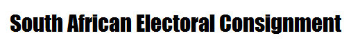
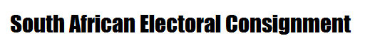

 The Parties To Be Vote For
Democratic Alliance
The present leader is John Steenhuisen,
The DA is the most diverse and dynamic party in South Africa. We are the only party to have grown in every election since 1994
 African
National Congress
African
National Congress
The present leader is Cyril Ramaphosa
The ANC's key objective is the creation of a united, non-racial, non-sexist and democratic society.
 Congress
Of The People
Congress
Of The People
The present leader is Lekota
The Congress of the People is committed to ensuring that the public is served by a party operating on the basis of integrity, and with high moral and ethical standards
 Economic
Freedom Fighter
Economic
Freedom Fighter
The present leader is Julius Malema
The ECONOMIC FREEDOM FIGHTERS is a radical and militant economic emancipation movement that brings together revolutionary
Agang
The present leader is Andries Tlouamma
AgangSA is committed to raising the participation of previously disadvantaged individuals in the South African economy and increasing prosperity for all South Africans through economic redress.
National Freedom Party
The present leader is Zanele Ka Magwaza
Our vision is to promote, secure and motivate a society that is not only politicallly emancipated but also to ensure that, through empowerment and meaningful service delivery, substantive economic emancipation is achieved
Inkatha Freedom Party
The present leader is Mangosutu Bhutelezi
The IFP exists as a political party to serve the people of South Africa, and to do so in the spirit of ubuntu/botho. Our primary purpose is to serve. It is why we exist
United Democratic Movement
The present leader is Bantu Holomisa
We are the political home of all South Africans, united in the spirit of South Africanism by our common passion for our Country, mobilising the creative power inherent in our rich diversity, towards our transformation into a Winning Nation.
African People's Convention
The present leader is Themba Godi
To be a viable, credible and progressive alternative governing party
Like and Follow Us
Facebook
Instagram
Twitter